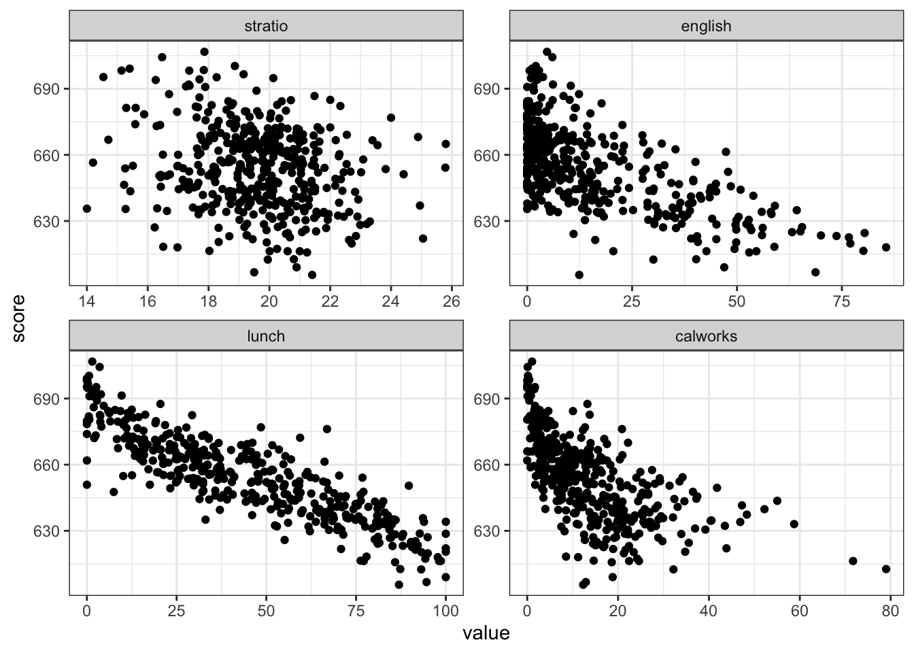

library(AER)
data("Journals")
# ?JournalsLectue 4 - Exercise Problems wit Solutions
1 Exercise Problems
1.1 Exercise 1: Demand for Economics Journal (Stock and Watson (2017), p336-337)
This exercise problem adapted from the economeric textbook of . Here using the Journals data from AER package, we are interested in examining the demand for economics journals. The data contains the information on the subscriptions to 180 economics journals at US libraries for the year 2000.
Load the data with the following code. Check the discription of the data with ?Journals.
For anything else, exploring the data is the first step in any data analysis. “Data exploration” section contains the exercies to practice the data manipulation and visualization for descriptive data analysis. Now, it’s your turn to load the package as needed. (I’m so happy if you would choose to use the packages we leaned before!)
You can skip the “Data exploration” section and move on to the “Regression analysis” section.
Data exploration
Find the top 10 journals with the highest citations. What about the top 10 journals with the highest price?
This data is taken from the year 2000. That is
Calculate the summary statistics (mean, median, standard deviation) for the
price,pages,citations,subs, and citations columns.Using facet_ Create a set of scatter plots that compare the relationship between
priceand variouscitations, andsubs, and. Show them in a grid
Regression Analysis
The goal here is to examine the demand for economics journals. Speficically, we want to estimate the price elasticity of demand for economics journals.
- First, create the following new variables:
citeprice: the price per citation . Also, if you haven’t createage: the number of years since the journal was first published (2000 - foundingyear).character_million: the number of characters in the journal title divided by 1 million.
- Estimate the following four regression models ((1)~(4)), and report the results in a table.
\[\begin{align} (1) \, log(subs) &= \beta_0 + \beta_1 log(citeprice) + e \\ (2) \, log(subs) &= \beta_0 + \beta_1 log(citeprice) + \beta_2 log(age) + e \\ (3) \, log(subs) &= \beta_0 + \beta_1 log(citeprice) + \beta_2 log(age) + \beta_3 log(character_million) + e \\ (4) \, log(subs) &= \beta_0 + \beta_1 log(citeprice) + \beta_2 log(age) + \beta_3 log(character_million) \end{align}\] \end{equation}
1.2 Solutions
# === Load packages === #
library(data.table)
library(ggplot2)
library(dplyr) # For the pipe operator %>%
setDT(Journals)
# === Part 1 === #
Journals[order(citations),] # order() function sorts title publisher
<char> <fctr>
1: Asian-Pacific Economic Literature Blackwell
2: South African Journal of Economic History So Afr ec history assn
3: Computational Economics Kluwer
4: MOCT-MOST Economic Policy in Transitional Economics Kluwer
5: Journal of Socio-Economics Elsevier
---
176: Journal of Finance Am. Finance Assn
177: Quarterly Journal of Economics MIT press
178: Journal of Political Economy Univ of Chicago Press
179: Econometrica Blackwell
180: American Economic Review Am Ec Assn
society price pages charpp citations foundingyear subs field
<fctr> <int> <int> <int> <int> <int> <int> <fctr>
1: no 123 440 3822 21 1986 14 General
2: no 20 309 1782 22 1986 59 Economic History
3: no 443 567 2924 22 1987 17 Specialized
4: no 276 520 3234 22 1991 2 Area Studies
5: no 295 791 3024 24 1972 96 Interdisciplinary
---
176: yes 226 2272 3036 3791 1945 799 Finance
177: no 148 1467 2184 4138 1886 660 General
178: no 159 1669 2640 6697 1892 737 General
179: yes 178 1482 2992 7943 1932 346 General
180: yes 47 1867 3900 8999 1911 1098 General# === Part 1 === #
Journals[,.(mean_price = mean(price), median_price = median(price), sd_price = sd(price),
mean_cites = mean(citations), median_cites = median(citations), sd_cites = sd(citations))] mean_price median_price sd_price mean_cites median_cites sd_cites
<num> <num> <num> <num> <num> <num>
1: 417.7222 282 385.8346 647.0556 262.5 1182.374# === Part 3 === #2 Analysis of the Test Score Dataset (Stock and Watson (2017), Chapter 7.6)
Using the CASchools dataset from the AER package, let’s do some regression analysis to examine the effects on test scores of the studnet-teacher ratio. The dataset contains data on test performance, school characteristics and student demographic backgrounds for school districts in California.
First, let’s load the data. See ?CASchools for the description of variables in the dataset.
# === Loading Data === #
data("CASchools")- Create the follwing new variables:
stratio: student-teacher ratio (students/teachers)score: the average of math and reading scores ((math + read)/2)
Using
datasummaryfunction, generate a summary table of key descriptive statistics for the CASchools dataset, including variables likescore,stratio,english, andlunch,calworks.Using
ggplotfunctions, Create scastter plots of test scores (score) against the percentage of English language lerners (english), percentage qualifying for reduced-price lunch (lunch), and percentage qualifying for income asistance (calworks). (It would be nice if you could use thefacet_wrap()function to show them at once.)Estimate the following five regression models and report the results in a table.
2.1 Solutions
# === Load package === #
# This is redundant but I am loading the same packages we already used before just for the purpose of showing which package I am using to work on this problem. Note than you need to you load the package only once in your current R session.
library(data.table)
library(ggplot2)
library(modelsummary)
library(AER)
# === Data === #
library(AER)
data(CASchools)
setDT(CASchools)
# === Part 1 === #
CASchools[,`:=`(
stratio = students/teachers,
score = (math + read)/2
)]
# === Part 2 === #
datasummary(
formula = score + stratio + english + lunch + calworks ~ Mean + SD + Min + Max,
data = CASchools,
)| Mean | SD | Min | Max | |
|---|---|---|---|---|
| score | 654.16 | 19.05 | 605.55 | 706.75 |
| stratio | 19.64 | 1.89 | 14.00 | 25.80 |
| english | 15.77 | 18.29 | 0.00 | 85.54 |
| lunch | 44.71 | 27.12 | 0.00 | 100.00 |
| calworks | 13.25 | 11.45 | 0.00 | 78.99 |
# === Part 3 === #
CASchools[,.(score, stratio, english, lunch, calworks)] %>%
melt(id.vars = "score") %>%
ggplot(aes(x = value, y = score)) +
geom_point() +
facet_wrap(~variable, scales = "free") +
theme_bw() #this part is optional
# === Part 4 === #
rge1 <- lm(score ~ stratio, data = CASchools)
rge2 <- lm(score ~ stratio + english, data = CASchools)
reg3 <- lm(score ~ stratio + english + lunch, data = CASchools)
reg4 <- lm(score ~ stratio + english + calworks, data = CASchools)
reg5 <- lm(score ~ stratio + english + lunch + calworks, data = CASchools)
modelsummary(
models = list(rge1, rge2, reg3, reg4, reg5),
stars = c("*" = .05, "**" = .01, "***" = .001),
coef_map = c(
"stratio" = "Student-teacher ratio",
"english" = "Percent Englisch learners",
"lunch" = "Percent eligible for subsidiezxed lunch",
"calworks" = "Percent qualifying for CalWorks.",
"(Intercept)" = "Intercept"
),
gof_map = c("nobs", "r.squared", "adj.r.squared"),
fmt = 2,
notes = list("Std. Errors in parentheses")
)| (1) | (2) | (3) | (4) | (5) | |
|---|---|---|---|---|---|
| * p < 0.05, ** p < 0.01, *** p < 0.001 | |||||
| Std. Errors in parentheses | |||||
| Student-teacher ratio | -2.28*** | -1.10** | -1.00*** | -1.31*** | -1.01*** |
| (0.48) | (0.38) | (0.24) | (0.31) | (0.24) | |
| Percent Englisch learners | -0.65*** | -0.12*** | -0.49*** | -0.13*** | |
| (0.04) | (0.03) | (0.03) | (0.03) | ||
| Percent eligible for subsidiezxed lunch | -0.55*** | -0.53*** | |||
| (0.02) | (0.03) | ||||
| Percent qualifying for CalWorks. | -0.79*** | -0.05 | |||
| (0.05) | (0.06) | ||||
| Intercept | 698.93*** | 686.03*** | 700.15*** | 698.00*** | 700.39*** |
| (9.47) | (7.41) | (4.69) | (6.02) | (4.70) | |
| Num.Obs. | 420 | 420 | 420 | 420 | 420 |
| R2 | 0.051 | 0.426 | 0.775 | 0.629 | 0.775 |
| R2 Adj. | 0.049 | 0.424 | 0.773 | 0.626 | 0.773 |